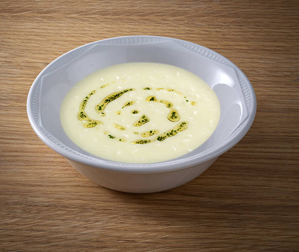

Terbiyeli işkembe çorbası tarifini temizlenmiş bir işkembe edindikten sonra kolayca evde hazırlayabilir, sevdiklerinizle paylaşabilirsiniz.

İşkembe Çorbası
Malzemeler
- 1 kilogram işkembe (iyi temizlenmiş)
- 3 yemek kaşığı tereyağı
- 3 yemek kaşığı un
Haşlamak için
- 1/2 adet limon suyu
- 1 adet küçük boykuru soğan
- 2 diş sarımsak
- 6 su bardağı su
Terbiyesi için
- 1 adet yumurta sarısı
- 2 yemek kaşığı un
- 4 yemek kaşığı yoğurt
- 1/2 adet limon suyu
- 1 çay kaşığı tuz
Servisi için
- 1/2 çay bardağı sirke
- 4 diş sarımsak
Nasıl yapılır?
- İyi temizlenmiş 1 kilogram işkembenin üzerini geçecek kadar su ilave edip, işkembeler yumuşayana kadar yaklaşık 40 dakika haşlayın.
- İşkembe haşlandıktan sonra bir kaseye aktarın.
- Ayrı bir tavada 3 yemek kaşığı tereyağını eritip üzerine 3 yemek kaşığı unu ekleyin ve unun kokusu çıkana kadar kavurun.
- Süzdüğünüz ve ılınmış olan haşlama suyundan tavaya azar azar ekleyin. Unun topaklanmaması için; bir çırpıcı yardımıyla hızlıca karıştırın.
- Bu karışımı işkembeleri haşladığınız tencerenin içerisine sürekli olarak karıştırarak yavaş yavaş yedirin.
- Çorbanın terbiyesini hazırlamak için; 4 yemek kaşığı yoğurt, 2 yemek kaşığı un, 1 çay kaşığı tuz, 1 adet yumurta sarısı ve yarım limon suyunu ayr bir kapta çırpın.
- Terbiye karışımını kaynamakta olan haşlama suyu ile ılıştırdıktan sonra çorba tenceresine azar azar ekleyin ve hızlıca karıştırın.
- Son olarak; haşlanan işkembeyi çorbaya ilave edin ve kısık ateşte, 15 dakika kadar kaynatarak pişirin.
- Sarımsakları rendeledikten sonra sirke ile karıştırın. Servis kaselerine aldığınız çorbayı, sarımsaklı sirke ilavesiyle sıcak olarak servis edin.
İŞTE PÜF NOKTALAR!!!
- İşkembeyi, iyice temizleyip bol suda yıkadıktan sonra haşlayın.
- İşkembeyi, arzuya göre sirkeli suda beklettikten sonra da haşlayabilirsiniz.
- Haşlama esnasında kullanılan kuru soğan, sarımsak, limon suyu gibi malzemeler işkembenin kokusunu alacaktır.
AFİYET OLSUN